Core · Video walkthrough
Activate a route, assign a unit and review its execution
Activate a saved plan, start its assigned training unit, reopen progress and history, and recognize the busy-unit refusal.
Before you begin
- Authorized Routes access and a separate fictional training department.
- A reviewed saved route and an appropriate available unit; verify road guidance before real operational use.
Chapters
- Review the prepared plan before activation
- Activate the plan and verify the saved action
- Choose the unit that will execute the route
- Start and inspect the returned instance
- Read the initial stop timeline
- Reopen from the In Progress overview
- Inspect the plan history
- Recognize the busy-unit guard
- Verify retained history and apply the review
Watch the walkthrough
Step 1
Review the prepared plan before activation
Open the saved route in Edit and check its Name and Description before changing its state. This is the fictional Community supply loop from the route-planning lesson. It has two prepared stops. Unit still says Assign at start time, and Status is Draft. Practice in a separate training department. Before using a real plan, verify its locations, contacts and directions with the people responsible for the work.
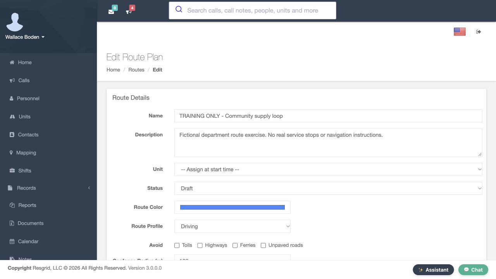
Practice
Review the prepared plan before activation
Step 2
Activate the plan and verify the saved action
Change Status from Draft to Active. Scroll to the bottom and select Save Changes. The returned Routes list shows Active beside Community supply loop, and its Actions now include Start. The plan is ready for the start operation, but this saved status alone does not show a unit executing it. The next step explicitly chooses the unit and creates that execution.
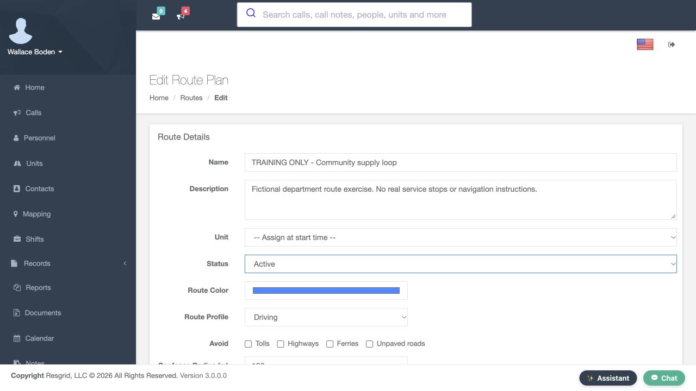
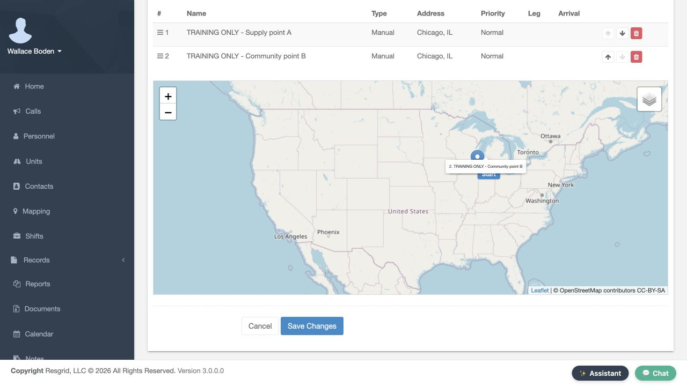
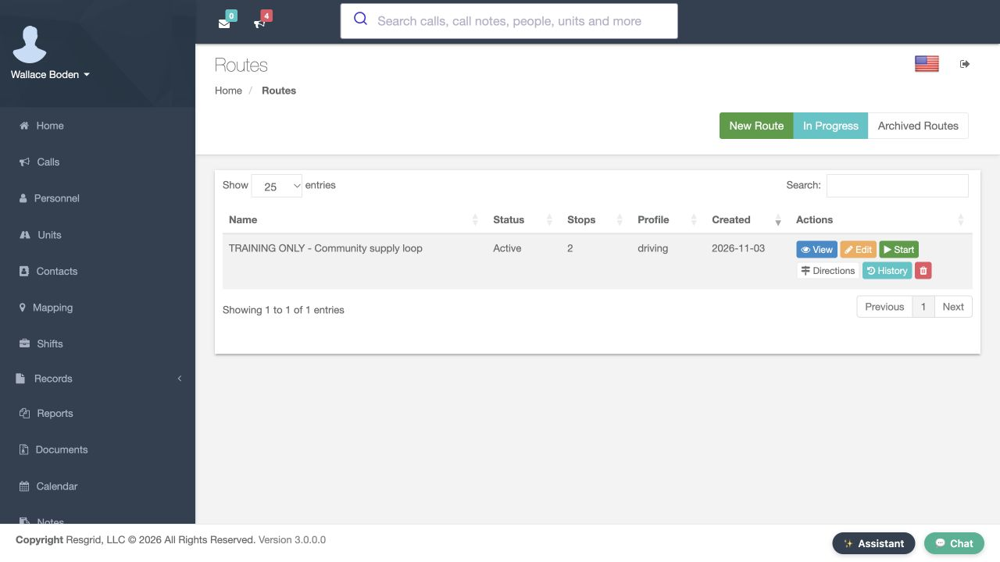
Practice
Activate the plan and verify the saved action
Step 3
Choose the unit that will execute the route
Select Start on the saved route row. The Start Route page asks for Assign Unit and says to select the unit that will execute this route. Choose the fictional Community van from the dropdown. Review the route name and this unit selection together. In your department, choose the resource responsible for these stops. The Start Route Now button is the action that begins the execution; Cancel leaves this start form.
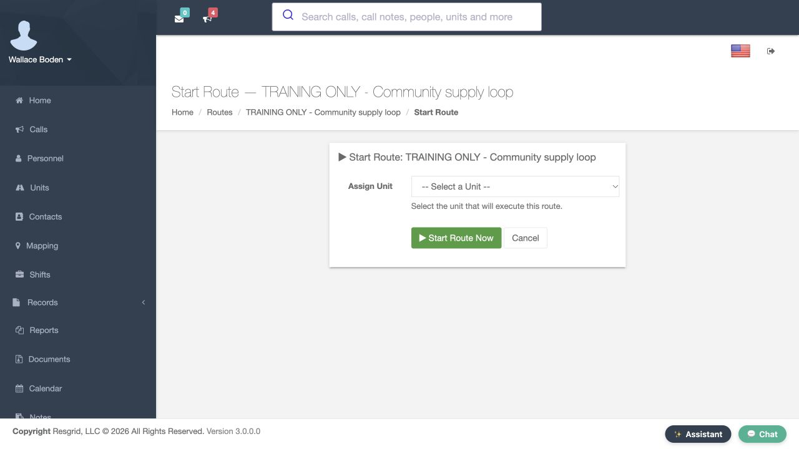
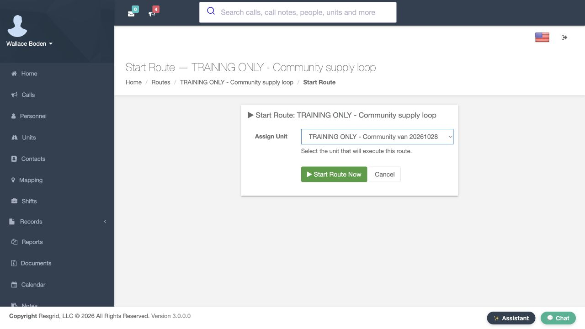
Practice
Choose the unit that will execute the route
Step 4
Start and inspect the returned instance
Select Start Route Now once. The returned Route Instance page shows In Progress in Instance Info, the unit identifier, and a Started time. Here the selected training van is represented by unit number fifty-one thousand eight. Ended is a dash, and Progress is zero of two. These saved instance details show that the start succeeded. They do not say that either service stop has already been completed.
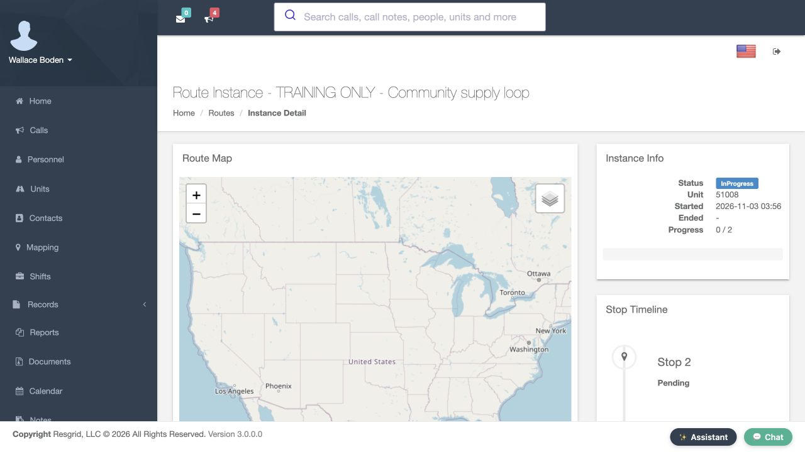
Practice
Start and inspect the returned instance
Step 5
Read the initial stop timeline
Scroll down to inspect Stop Timeline. Both entries are Pending in this newly started instance, and the progress remains zero of two. Use the status text and progress together when reviewing a route. This recording has not checked into either location, and the map does not display a generated road route. Starting an instance is an administration step; verify navigation and actual field progress separately before relying on them.
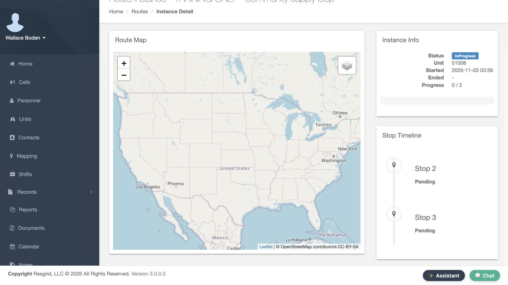
Practice
Read the initial stop timeline
Step 6
Reopen from the In Progress overview
Return to Routes and select In Progress in the top action bar. The overview now contains the Community supply loop card, its unit number, start time and zero-of-two stop count. Select View Details on that card. The same instance information returns with In Progress and the original start time. This lets a supervisor find an executing route again without starting another instance.
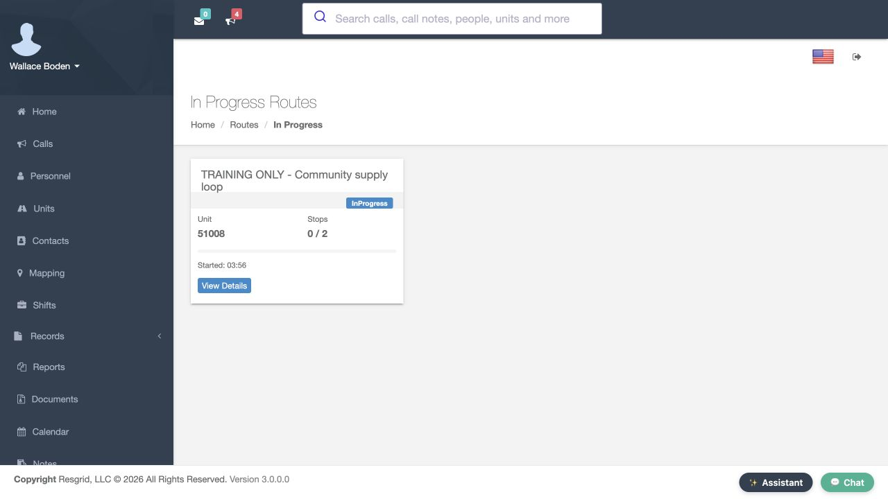
Practice
Reopen from the In Progress overview
Step 7
Inspect the plan history
Return to Routes and select History on the Community supply loop row. Route History lists the stored execution with Status, Unit, Started, Ended and Stops columns. In this exercise there is one In Progress row, a start time, no end time and zero of two completed stops. Detail opens that execution. Use this history when checking which instance a progress report refers to, rather than treating the plan status as the execution history.
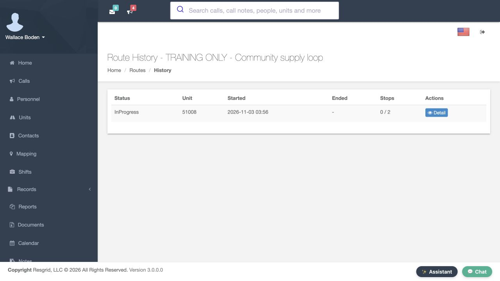
Practice
Inspect the plan history
Step 8
Recognize the busy-unit guard
For this training check, return to Start and select the same Community van while its first instance is still in progress. Select Start Route Now once. Resgrid returns Unit already has an active route instance. This refusal means the second start did not succeed. Do not keep retrying that unit. Review its existing route before deciding whether another appropriate resource should take a different assignment.
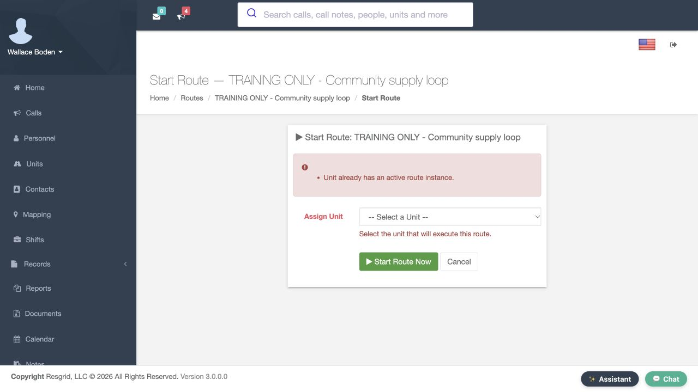
Practice
Recognize the busy-unit guard
Step 9
Verify retained history and apply the review
Leave the refused start with Cancel, return to Routes and open History again. The recorded result still has the original single In Progress instance with zero of two stops completed. Keep the distinction clear: prepare the plan, start the intended unit, then inspect actual progress. This pattern can support search-and-rescue logistics, security service visits, wildland supplies, industrial response support, community paramedicine or mental health outreach, as well as fire and E M S. Match the stops and assigned resource to your department’s work.
Practice
Verify retained history and apply the review
Examples for your department
- Fire / EMS
- Assign an appropriate unit to a reviewed service or logistics plan and verify the saved instance, history and real progress.
- Community response
- Assign an appropriate unit to a reviewed service or logistics plan and verify the saved instance, history and real progress.
- Search and rescue
- Assign an appropriate unit to a reviewed service or logistics plan and verify the saved instance, history and real progress.
- Security
- Assign an appropriate unit to a reviewed service or logistics plan and verify the saved instance, history and real progress.
- Wildland
- Assign an appropriate unit to a reviewed service or logistics plan and verify the saved instance, history and real progress.
- Industrial
- Assign an appropriate unit to a reviewed service or logistics plan and verify the saved instance, history and real progress.
Transcript
Download transcriptRead the complete transcript
Activate a route, assign a unit and review its execution Audience: Department administrators, Operations supervisors, Route and logistics coordinators Review the prepared plan before activation Open the saved route in Edit and check its Name and Description before changing its state. This is the fictional Community supply loop from the route-planning lesson. It has two prepared stops. Unit still says Assign at start time, and Status is Draft. Practice in a separate training department. Before using a real plan, verify its locations, contacts and directions with the people responsible for the work. Practice: Review the prepared plan before activation Activate the plan and verify the saved action Change Status from Draft to Active. Scroll to the bottom and select Save Changes. The returned Routes list shows Active beside Community supply loop, and its Actions now include Start. The plan is ready for the start operation, but this saved status alone does not show a unit executing it. The next step explicitly chooses the unit and creates that execution. Practice: Activate the plan and verify the saved action Choose the unit that will execute the route Select Start on the saved route row. The Start Route page asks for Assign Unit and says to select the unit that will execute this route. Choose the fictional Community van from the dropdown. Review the route name and this unit selection together. In your department, choose the resource responsible for these stops. The Start Route Now button is the action that begins the execution; Cancel leaves this start form. Practice: Choose the unit that will execute the route Start and inspect the returned instance Select Start Route Now once. The returned Route Instance page shows In Progress in Instance Info, the unit identifier, and a Started time. Here the selected training van is represented by unit number fifty-one thousand eight. Ended is a dash, and Progress is zero of two. These saved instance details show that the start succeeded. They do not say that either service stop has already been completed. Practice: Start and inspect the returned instance Read the initial stop timeline Scroll down to inspect Stop Timeline. Both entries are Pending in this newly started instance, and the progress remains zero of two. Use the status text and progress together when reviewing a route. This recording has not checked into either location, and the map does not display a generated road route. Starting an instance is an administration step; verify navigation and actual field progress separately before relying on them. Practice: Read the initial stop timeline Reopen from the In Progress overview Return to Routes and select In Progress in the top action bar. The overview now contains the Community supply loop card, its unit number, start time and zero-of-two stop count. Select View Details on that card. The same instance information returns with In Progress and the original start time. This lets a supervisor find an executing route again without starting another instance. Practice: Reopen from the In Progress overview Inspect the plan history Return to Routes and select History on the Community supply loop row. Route History lists the stored execution with Status, Unit, Started, Ended and Stops columns. In this exercise there is one In Progress row, a start time, no end time and zero of two completed stops. Detail opens that execution. Use this history when checking which instance a progress report refers to, rather than treating the plan status as the execution history. Practice: Inspect the plan history Recognize the busy-unit guard For this training check, return to Start and select the same Community van while its first instance is still in progress. Select Start Route Now once. Resgrid returns Unit already has an active route instance. This refusal means the second start did not succeed. Do not keep retrying that unit. Review its existing route before deciding whether another appropriate resource should take a different assignment. Practice: Recognize the busy-unit guard Verify retained history and apply the review Leave the refused start with Cancel, return to Routes and open History again. The recorded result still has the original single In Progress instance with zero of two stops completed. Keep the distinction clear: prepare the plan, start the intended unit, then inspect actual progress. This pattern can support search-and-rescue logistics, security service visits, wildland supplies, industrial response support, community paramedicine or mental health outreach, as well as fire and E M S. Match the stops and assigned resource to your department’s work. Practice: Verify retained history and apply the review Examples for your department Fire / EMS: Assign an appropriate unit to a reviewed service or logistics plan and verify the saved instance, history and real progress. Community response: Assign an appropriate unit to a reviewed service or logistics plan and verify the saved instance, history and real progress. Search and rescue: Assign an appropriate unit to a reviewed service or logistics plan and verify the saved instance, history and real progress. Security: Assign an appropriate unit to a reviewed service or logistics plan and verify the saved instance, history and real progress. Wildland: Assign an appropriate unit to a reviewed service or logistics plan and verify the saved instance, history and real progress. Industrial: Assign an appropriate unit to a reviewed service or logistics plan and verify the saved instance, history and real progress.